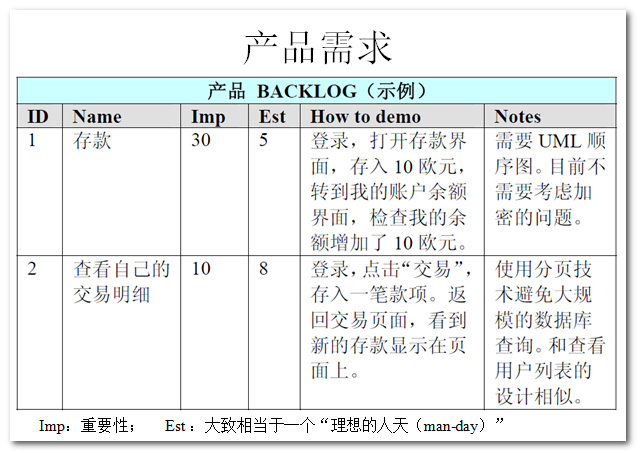
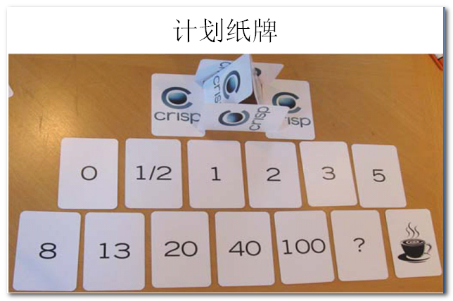
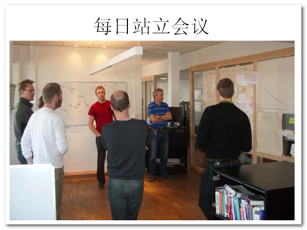
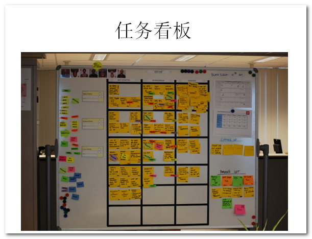
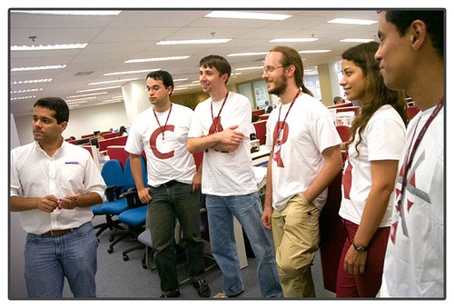
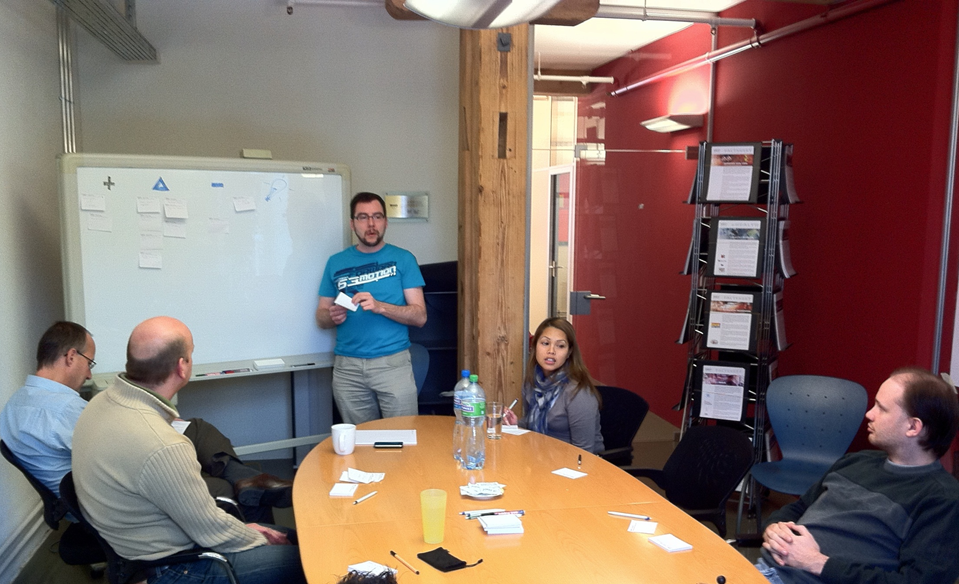

scrum
让我悄悄的告诉你
Created by Howard.Zuo / @Howard.Zuo
过去我们忍受了什么
无序作业
敏捷开发
敏捷开发以用户的需求进化为核心，采用迭代、循序渐进的方法进行软件开发。在敏捷开发中，软件项目在构建初期被切分成多个子项目，各个子项目的成果都经过测试，具备可视、可集成和可运行使用的特征。换言之，就是把一个大项目分为多个相互联系，但也可独立运行的小项目，并分别完成，在此过程中软件一直处于可使用状态
与迭代的区别
- 迭代开发是一种软件开发的生命周期模型，与其对应的还有瀑布模型、螺旋模型等等
- 敏捷开发是多种软件开发项目管理方法的集合，其中保护了XP、Scrum等十几种开发模式
scrum
Scrum是一个包括了一系列的实践和预定义角色的过程骨架（是一种流程、计划、模式，用于有效率地开发软件）。Scrum中的主要角色包括同项目经理类似的Scrum Master负责维护过程和任务，Product Owner代表利益所有者，开发团队包括了所有开发人员
Scrum流程图

3个角色
Product Owner
- 清晰表达产品待办事项
- 对产品待办事项中的条目进行排序
- 确保开发团队所执行工作的价值
- 确保产品待办事项对所有人可见、透明、清晰，并且展示Scrum团队的下一步工作
- 确保开发团队对产品待办事项中的任务达到一定程度的理解
Scrum Master
- 负责确保Scrum被理解并实施
- 帮助Scrum团队外的人员了解他们如何与Scrum团队交互是有益的。Scrum Master通过改变这些交互来最大化Scrum团队所创造的价值
- 找到有效管理产品待办事项的技巧
- 清晰地和开发团队沟通愿景、目标和产品待办事项
- 在经验主义环境中理解长期的产品规划
- 理解并实践敏捷
- 按需推动Scrum活动
- 指导开发团队自组织和跨职能
- 教导并领导开发团队创造高价值的产品
- 移除开发团队进展过程中的障碍
Scrum Team
- 他们是自组织的，没有人(即使是Scrum Master都不可以)告诉开发团队如何把产品待办事项变成潜在可发布的功能
- 开发团队是跨职能的，团队作为一个整体拥有创造产品增量所需要的全部技能
- Scrum不认可开发团队成员的头衔，无论承担哪种工作他们都是开发者。此规则无一例外
- 开发团队中的每个成员可以有特长和专注领域,但是责任归属于整个开发团队
- 开发团队不包含如测试或业务分析等负责特定领域的子团队
3个组件
Product Backlog
是一个排序的列表，包含所有产品需要的东西，也是产品需求变动的唯一来源。Product Owner负责Product Backlog的内容、可用性和优先级
Sprint Backlog
是一组为当前Sprint选出的产品待办事项，外加交付产品增量和实现Sprint目标的计划。Sprint待办事项是开发团队对于哪些功能要包含在下个增量中，以及交付那些功能所需工作的预计
Burn-down Chart
显示了Sprint中累积剩余的工作量，它是一个反映工作量完成状况的趋势图。 图中Y轴代表的是剩余工作量，X轴代表的是Sprint的工作日

5个活动
- Sprint Planning Meeting
- Daily Scrum Meeting
- Sprint Review Meeting
- Sprint Retrospective Meeting
- Product Backlog Refinement
Poker Game
Daily Scrum Meeting
活动看板
Sprint Review Meeting
Sprint Review Meeting
5个价值
- 承诺 – 愿意对目标做出承诺
- 专注– 把你的心思和能力都用到你承诺的工作上去
- 开放– Scrum 把项目中的一切开放给每个人看
- 尊重– 每个人都有他独特的背景和经验
- 勇气– 有勇气做出承诺，履行承诺，接受别人的尊重